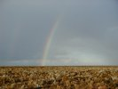
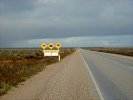
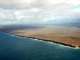
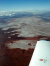
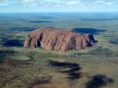
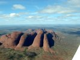

June
- 2nd
- 3rd
- 4th
- 5th
- 6th
- 7th
- 8th
- 9th
- 10th
- 11th
- 12th
- 13th
- 14th
- 15th
- 16th
- 17th
- 18th
- 19th
- 20th
- 21st
- 22nd
- 23rd
- 24th
- 25th
- 26th
- 27th
- 28th
- 29th
- 30th
July
- 1st
- 2nd
- 3rd
- 4th
- 5th
- 6th
- 7th
- 8th
- 9th
- 10th
- 11th
- 12th
- 13th
- 14th
- 15th
- 16th
- 17th
- 18th
- 19th
- 20th
- 21st
- 22nd
- 23rd
- 24th
- 25th
- 26th
- 27th
- 28th
- 29th
- 30th
- 31st
August
{kind=link}

We woke up to heavy rain and clouds, which might be nice for photographing but certainly not for flying.{kind=link}

However, the forecast did sound kind of promising. The aviation weather forecaster confirmed this and assured us, by looking on his weather radar, that it only was in our close vicinity the clouds were hanging low - "You'll be alright, mate". So we decided to continue as planned and fly to Ayers Rock. After a take-off from the wet and slippery clay strip, we made a detour down to the "Head of Bight" to look for whales. Five had been spotted the day before, but unfortunately we didn't see any. A last glimpse of the Nullarbor coastline{kind=link}

and of we went directly north for Ayers Rock. After passing through a wall of rain the weather cleared up so we could climb to 9500ft and proceed our journey in much smoother air.

{kind=link}
.jpg){kind=link}

.jpg){kind=link}

The resort was a disappointment: Everything was very expensive (which of course is expected) and the overpriced backpackers had no facilities whatsoever. It might be nice in summer, but in winter, when it gets really cold in the evening, you won't appreciate that the only tables you can sit at are outside.
There were clouds in the horizon, so the sunset was nothing special that day.